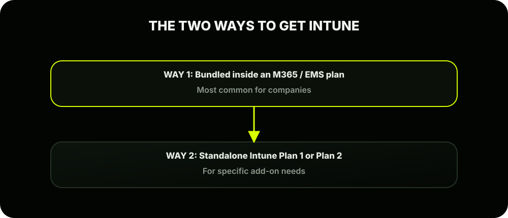
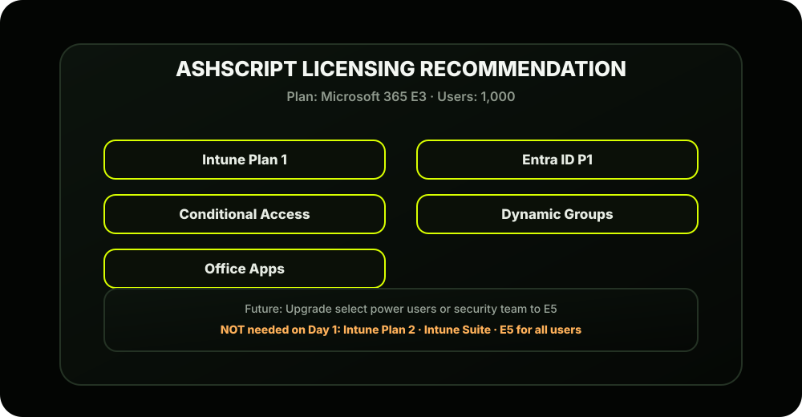

The Scene
Ashpak has done his research. He understands what Intune is and how it fits the ecosystem. Now comes the part that makes or breaks any IT project; the budget conversation.
Riya, the IT Manager, calls Ashpak in:
Ashpak opens his laptop and walks Riya through the licensing landscape.
The Most Important Thing to Understand First
Microsoft licensing is notoriously confusing. But here's the one principle that cuts through all the noise:
So if AshScript has 1,000 employees, they need 1,000 licenses; even if those employees have 2 or 3 devices each (up to 5).
The Two Ways to Get Intune
Intune doesn't have to be purchased standalone. It comes in two ways:

Let's break down both.
Route 1: Microsoft 365 Bundles (Most Relevant for AshScript)
These are the plans most companies like AshScript actually buy. Each tier includes Intune plus other tools.
The Bundle Comparison Table
| Feature | M365 BP | M365 E3 | M365 E5 |
|---|---|---|---|
| Full name | Business Premium | Enterprise 3 | Enterprise 5 |
| Max users | 300 users | Unlimited | Unlimited |
| Intune Plan 1 | ✓ | ✓ | ✓ |
| Entra ID P1 | ✓ | ✓ | ✓ |
| Entra ID P2 | × | × | ✓ |
| Conditional Access | ✓ | ✓ | ✓ |
| Microsoft Defender for Business | ✓ | × | ✓ |
| Defender for Endpoint Plan 2 | × | × | ✓ |
| Azure AD Identity Protection | × | × | ✓ |
| Office Apps (Word, Excel etc.) | ✓ | ✓ | ✓ |
| Approx. price/user/month | ~$22 | ~$36 | ~$57 |
What Does This Mean for AshScript?
AshScript has 1,000 employees. That immediately rules out M365 Business Premium; it has a hard cap of 300 users.
So AshScript is looking at:
- Option A: M365 E3 (~$36/user/month × 1,000 = ~$36,000/month)
- Option B: M365 E5 (~$57/user/month × 1,000 = ~$57,000/month)
Ashpak's recommendation to Riya:
This is actually a best practice in real-world deployments; don't over-license on day one.
Route 2: Standalone Intune Plans
If a company already has M365 but needs to add Intune separately, or wants advanced Intune features, Microsoft offers standalone plans:
Intune Plan 1 vs Plan 2
| Feature | Intune Plan 1 | Intune Plan 2 |
|---|---|---|
| What it is | Core MDM + MAM | Plan 1 + advanced features |
| Device management | All platforms | All platforms |
| App management (MAM) | ✓ | ✓ |
| Compliance policies | ✓ | ✓ |
| Configuration profiles | ✓ | ✓ |
| Microsoft Tunnel (VPN) | ✓ | ✓ |
| Specialty device management | × | ✓ |
| Advanced endpoint analytics | × | ✓ |
| Standalone price | ~$8/user/month | ~$10/user/month |
Entra ID Tiers: Why They Matter for Intune
Remember from Lesson 1.2; Intune depends on Entra ID for identity. The tier of Entra ID you have determines what security features you can use alongside Intune:
| Feature | Entra ID Free | Entra ID P1 | Entra ID P2 |
|---|---|---|---|
| Basic user/group management | ✓ | ✓ | ✓ |
| Conditional Access | × | ✓ | ✓ |
| Dynamic Groups | × | ✓ | ✓ |
| MFA | (basic) | (full) | (full) |
| Identity Protection (risk-based) | × | × | ✓ |
| Privileged Identity Management | × | × | ✓ |
| Included in M365 E3 | ✓ | ✓ | × |
| Included in M365 E5 | ✓ | ✓ | ✓ |
Why This Matters for AshScript
Two features that Ashpak absolutely needs require at minimum Entra ID P1:
- Conditional Access; blocking non-compliant devices from company resources
- Dynamic Groups; automatically adding devices/users to groups based on rules
Both are included in M365 E3, so AshScript is covered.
What About the Mobile Devices?
AshScript has 200 mobile devices (150 macOS, 50 Android). These are company-owned, so they need full MDM licenses; same as the laptops. As long as those device users have an Intune license assigned, they're covered.
For BYOD personal devices (the scenario employees are requesting): the user still needs an Intune license assigned to use MAM (App Protection). The license is on the user, not the device.
AshScript's Licensing Decision Summary
Here's the clean summary Ashpak puts in front of Riya:

Key Takeaways from This Lesson
| Concept | Remember This |
|---|---|
| Licensing model | Per user, covers up to 5 devices |
| Best fit for AshScript | M365 E3 (1,000 users, includes Intune + Entra P1) |
| Intune Plan 1 vs 2 | Plan 1 is enough for most companies starting out |
| Entra ID P1 is critical | Needed for Conditional Access and Dynamic Groups |
| Licenses live in | admin.microsoft.com → Billing → Licenses |
| Common gotcha | User must have a license BEFORE device can enroll |